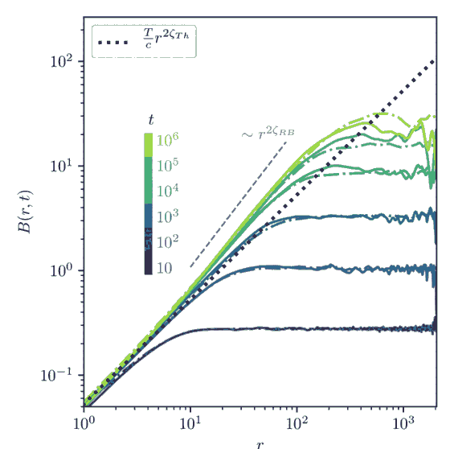

从 φ(r,t) 到一条会退钉扎的畴壁，中间到底做了哪些近似？
前两章已经把问题拆成两种语言：体相序参量可以产生复杂畴结构，弹性界面则擅长描述阈值、粗糙度和普适性。数值建模真正困难的地方，不是“把 TDGL 写进代码”，而是知道每一步粗粒化保留了什么、丢掉了什么，以及网格有没有悄悄改掉你的物理参数。
第一次读这一章，只抓四个支点：先把“模型是什么”与“数值怎么实现”分开。下面四步能讲清，再进入后面的研究级验收细节。
核心来源：Chen 2008 来自项目 Drive 根目录；Caballero et al. 2020 来自项目 Drive `03 Depinning, elastic-interface, RFIM theory`；Fedeli et al. 2019 来自项目 Drive 的相场文献集。论文图均来自这些 PDF 本身。
1 · Chen 2008：相场不是画畴图的软件，而是一套自由能 + 动力学
最先要固定的是模型层级。相场不追踪每个原子，而用空间连续的极化场 P(r) 描述局域状态；畴壁不是单独画进去的几何线，而是 P 从一个自由能极小值连续过渡到另一个极小值的区域。自由能里至少要知道哪些项在竞争：局域朗道势决定偏好的极化态，梯度项惩罚过快的空间变化，静电项 / 弹性项则提供长程耦合与边界条件。
It describes a domain structure using the spatial distribution of spontaneous polarization. The evolution of a domain structure towards equilibrium is driven by the reduction in the total-free energy of an inhomogeneous domain structure including the chemical driving force, domain wall energy, electrostatic energy as well as elastic energy.
With all the important energetic contributions to the total-free energy, the temporal evolution of the polarization vector field, and thus the domain structure, is then described by the time-dependent Ginzburg-Landau (TDGL) equations.
Chen 把相场方法的三个核心层次说得很清楚：用空间分布的自发极化描述畴结构；总自由能同时包含化学驱动力、畴壁能、静电能和弹性能；随后用 TDGL 方程描述极化场如何沿着降低总自由能的方向演化。这里学的是模型结构，而不是某一套材料参数。
作者真正支持什么
相场用空间分布的极化表示畴结构，并通过总自由能下降描述其演化；该框架能显式容纳畴壁、弹性与静电能量。
不要偷换成什么
Chen 的综述不意味着任意简化的标量 φ⁴ 模型都能定量代表某个滑移铁电材料。材料级预测需要重新说明序参量、对称性、长程项与参数来源。
2 · 把复杂铁电压成最小标量模型：你到底删掉了什么？
如果目标不是重现实验材料的全部畴结构，而是研究一堵 180° 壁在淬火无序中怎样运动，可以进一步缩成一个标量序参量 φ。最小自由能可以写成：
保留下来的自由度
局域序参量、有限壁宽、畴的生成/消失、曲率、悬垂、封闭小畴，以及在需要时加入长程场或多分量耦合的可能性。
被扔掉的自由度
具体原子滑移坐标、晶格级 Peierls 势、真实多层堆垛标签、完整张量极化，以及若未显式加入就不存在的静电 / 弹性非局域性。
3 · Caballero 2020：什么时候 φ(x,y) 真能约化成 u(y)？
这篇就是 06 → 07 的关键桥。体相 GL 不对界面形状做先验假设；elastic-line model（弹性线模型）则把墙压成单值函数 u(y,t)。作者做的不是“说它们差不多”，而是从 GL 的孤子剖面出发，把畴壁位置当集体坐标，并比较两种模型的粗糙度与结构因子。
For a bulk description, we consider a two-dimensional Ginzburg–Landau model evolving with a Langevin equation, and boundary conditions imposing the formation of a rectilinear domain wall. At this level of description no assumptions need to be done over the interface.
On a different level of description, we consider a one-dimensional elastic line model evolving according to the Edwards–Wilkinson equation, which only allows one to study continuous and univalued interfaces.
Caballero 明确比较两个描述层级：二维 Ginzburg–Landau 体场模型并不预先限定界面形状；一维 Edwards–Wilkinson 弹性线模型则只允许连续、单值的界面。因此，从相场约化到弹性线之前，必须先确认真实畴壁没有在目标尺度上出现持续的悬垂、封闭小畴等非单值结构。

彩色曲面是 φ(x,y)，黑线是从体相场中抽出的界面；右上角类 tanh 剖面展示了有限畴壁宽度。这个图最值得记：u(y) 是从 φ(r) 涌现出来的低维坐标，不是另一套互不相干的模型。

作者不是只比较畴壁快照，而是比较从体相场抽出的界面统计量。这里保留 B(r,t) 的坐标、时间色标和理论/数值曲线，用来判断模型约化是否在目标尺度成立。

与 B(r,t) 一起看，S(q,t) 检查的是同一界面在 Fourier（傅里叶）空间的尺度结构。两种描述在作者建立的参数映射与适用条件下给出相容结果，才支持把弥散畴壁约化成弹性线。
真正能拿来用的判据
壁宽相对观察尺度足够小、界面大体单值、低温/弱体相涨落，并且抽出的 u(y) 的粗糙度 / 结构因子与 约化模型在目标尺度上相容。
失效信号
强成核、孤立小畴、持续悬垂/封闭小畴、壁宽与相关长度同阶、强局域变形，或不同畴壁提取方法给出显著不同 ζ。此时不要强行拟合弹性线指数。
4 · Dai 2026：什么时候单一 u(y) 不是“近似得粗”，而是自由度真的少了？
Caballero 的约化问题默认只有一堵主要界面。多层滑移铁电会出现更直接的失效模式：不是畴壁变得有一点悬垂，而是体系本来就有多个滑移界面。Dai 2026 的三层 γ-InSe 计算显示，相邻层的畴壁位于不同位置，中间可以形成非极性畴，外场下又出现分阶段运动与显著畴壁间相互作用。
仍可做单畴壁最小问题
当研究问题明确限定在双层近似、一堵预存畴壁、其它界面自由度被冻结时，单一 u(y) 仍是最干净的普适性检验。
不能无条件外推
三层 / 多层的中间态、耦合畴壁与畴壁间相互作用可能引入新的长度和时间尺度；单畴壁 β/ζ/ν 不能自动描述整个多层翻转。
4.5 · 无量纲化与可辨识性：参数多，不等于信息多
一套连续体模型可以同时写 κ、V0、P0、Γ、无序幅度、关联长度和温度；但一条实验曲线通常不能把它们全部独立决定。真正应该先问的是：某个可观测量约束的是哪个参数，还是只约束某个参数组合？ 如果这个问题没回答，所谓“参数拟合得很好”可能只是不可辨识性。
4.5.1 · 先用无序为零单谐波扇区看清“参数组合”
对 Research Track 中采用的周期性堆垛模型，先暂时关掉驱动与无序，并只保留一维、无序为零的单谐波扇区：
在这个明确归一化 下，相邻极小值之间的 sine-Gordon kink（孤子） 有特征宽度与壁张力：
这两式立刻暴露可辨识性：只知道畴壁宽度时，只约束 κ/V0 的组合；如果还能独立知道畴壁张力 / 畴壁能量，才有机会在这个简化模型里拆开：
4.5.2 · 哪个可观测量能约束什么？
| 可观测量 / 先验 | 主要约束 | 单独做不到什么 |
|---|---|---|
| 堆垛对称性 / 极小值数 | 周期性、允许的 n、序参量拓扑 | 不能靠滞回拟合把对称性当自由参数随便调 |
| 无序为零畴壁宽度 ℓw | 梯度刚度 / 局域势垒的长度组合 | 通常不能单独拆出 κ 与 V0 |
| 无序为零畴壁能量 / 张力 γw | √(κV0) 类型的能量组合 | 没有宽度信息时仍不能唯一决定 κ、V0 |
| 堆垛能量景观 / 势垒 | 局域势的能量尺度与谐波成分 | 不决定梯度刚度 κ |
| 极化幅度 / 静电耦合约定 | P0 与电驱动能量尺度 | 不能从矫顽场单独反推出 P0 |
| 无序为零时的畴壁迁移率 / 弛豫 time | 在静态性质已冻结后的 Γ / 动力学尺度 | 若 κ、V0 还漂着，Γ 会与能量尺度互相补偿 |
| P–E 回线 / 矫顽尺度 | 方案下多个机制的综合响应 | 不能唯一同时识别 κ、V0、Γ、σ、ξd |
| 无序形貌 + 阈值统计 | 在无序为零基准冻结后的耦合形式、强度、关联效应 | 不能用来补偿一个本来就错误的无序为零畴壁 |
4.5.3 · 无量纲化的价值，是看见真正控制问题的比值
在上面的单谐波无序为零模型中，可以用 ℓw 作为自然长度。于是很多“参数扫描”其实更应该写成无量纲比：
| 比值 | 物理含义 | 数值上要问什么 |
|---|---|---|
| dx / ℓw | 网格相对畴壁核心区的解析度 | 畴壁是否被足够多网格点解析 |
| L / ℓw | 体系尺寸相对微观畴壁尺度 | 有限尺寸标度是否真的离开畴壁核心区尺度 |
| ξd / ℓw | 无序关联长度相对畴壁宽度 | 畴壁看到的是近白噪声、有限相关缺陷，还是平滑景观 |
| E P0 / V0 | 驱动耦合相对局域周期性能量尺度 | 它只是自然驱动力比，不自动等于矫顽场 / 退钉扎场 |
| σRF / V0 或 σRB / V0 | 无序能量尺度相对无序为零势垒 | 不同耦合形式仍需公平匹配，不能只比同一个数字 σ |
4.5.4 · Γ 最好在静态性质冻结以后再校准
若采用 overdamped（过阻尼）TDGL 形式 ∂tφ = −Γ δF/δφ，那么在这个归一化下，无序为零时的极小值附近局域曲率是 n²V0，小扰动的自然局域弛豫时间满足：
这里的重点不是把这个前因子当普适常数，而是说明 Γ 只有在能量尺度冻结后才有独立动力学意义。实际校准更稳妥的做法，是先用静态性质决定畴壁剖面 / 能量，再用无序为零时的畴壁迁移率或独立弛豫可观测量约束动力学尺度。
4.5.5 · 校准与验证必须分开
由堆垛对称性 / 微观景观决定序参量与周期性。
用畴壁宽度、畴壁能量、堆垛势垒等冻结 κ / V0 相关组合。
再用迁移率 / 弛豫约束 Γ，不让动力学参数替静态性质擦屁股。
在无序为零基准不动以后，定义 RF/RB 耦合、物理幅度与 ξd。
明确哪些可观测量被用来定参数。
用没参与校准的形貌、阈值、尺寸 / 温度响应检查模型是否真的预测到新东西。
5 · Fedeli 2019：无序要进入“物理项”，而不是只给结果图加噪声
Different kinds of defects were considered: holes, point charges and polarization pinning in single crystals, as well as grain boundaries in polycrystals, without and with additional dielectric interphase.
It can be seen that defects lead to nucleation of new domains. Compared to the energy barrier for switching in an ideal single crystal, the overall coercive field strength is significantly reduced towards realistic values.
Fedeli 等直接比较多类实际缺陷，包括孔洞、点电荷、极化钉扎以及多晶中的晶界。它们都可能促进新畴成核，并把相对于理想单晶的翻转势垒和矫顽场降低到更接近真实器件的范围。这里最重要的提醒是：不同缺陷对应的耦合机制并不相同。
| 连续场里的做法 | 物理含义 | 与 06 的关系 |
|---|---|---|
| V(φ,r) 或 α(r)、势垒(r) 随位置变 | 局域翻转代价 / 畴壁能量随位置变；若 ±φ 对称仍保留，常可看成随机键型 | 随机的是景观，不直接偏爱 + 或 − |
| −h(r)φ | 局域偏置直接偏爱序参量的某个符号 | 连续体随机场耦合；但不等同于“已经用了 RFIM” |
| 固定区域 φ 或极大局域势垒 | 钉扎中心 / 固定区域 | 更接近强、局域、非高斯缺陷，而不是白噪声 |
| 有限相关长度 hℓ(r) | 缺陷景观有真实尺寸 ℓ | dx 改变时必须保持 ℓ 的物理长度不变 |
研究桥接 · 无序至少有三条独立轴：耦合方式 × 强度 × 关联长度
只写“RF 强度 = σ”仍然少了一维信息。即使耦合形式与 RMS（均方根）强度相同，只要空间相关长度不同，畴壁看到的能量景观就可以完全不同。最小写法是：
δ 相关极限
理想连续体白噪声没有有限微观 ξd。离散成网格单元平均局域场时，网格方差必须随网格单元体积重标度；二维对应标准差 ∝ dx−1。
有限相关长度无序
若先定义一个物理 ξd 并生成连续相关场，dx 加密的任务是更好地解析同一个 ξd；不能再机械把“每格 σ”按白噪声公式解释。
6 · 最容易把数值结果做假的地方：dx 改了，无序也跟着变
下面不是某篇论文的直接原句，而是本站对连续体白噪声无序的离散化推导。它是做收敛检验前必须固定的量。
h = σ * normal()，然后把 dx 从 1 改成 0.5 却保持 σ 不变，你并没有只“加密网格”；你同时把连续体无序强度改弱了。反过来，若目标是固定物理白噪声强度，应让输入标准差按 1/dx 缩放。白噪声无序
固定的是 Δ，而不是数组里每个网格点的标准差。一般 d 维下，标准差 ∝ dx−d/2。
有限相关长度无序
先定义物理关联长度 ℓ 和协方差，再离散。只要 dx 足够解析 ℓ，就不应把它继续当 δ 相关噪声用同一缩放规则硬套。
6.2 · 热噪声 / FDT：温度不是再加一张随机场
淬火无序与热噪声都会在代码里出现随机数，但物理角色完全不同：淬火场在一次运行内固定；热噪声随时间刷新，并且其幅度必须与迁移率、温度、空间网格单元测度和时间步长一起满足涨落–耗散约定。
淬火无序
描述固定无序景观。一个无序样本生成后整条轨迹都使用同一 h(r) / δV(r)。白噪声空间归一化涉及网格单元测度，但没有时间 δ 函数。
热噪声
描述与热浴相连的快速随机力。白噪声理想化同时在空间和时间上均为 δ 相关；改变 dx 或 dt 都会改变离散采样幅度。
6.2.1 · 先声明连续方程，再写离散随机数
对常迁移率、加性噪声的过阻尼 TDGL / 模型 A 约定：
这一定义把热浴的噪声强度和耗散迁移率 Γ 绑在一起。若模型使用无量纲能量 / 温度，或 Γ 的定义放在方程另一侧，前因子必须跟着该归一化重新推导；不要从别人的代码里抄一个 sqrt(T)。
6.2.2 · 导数项噪声与每步增量噪声的 dt 标度正好相反
设一个离散网格单元的测度为 ΔV（二维有效模型可对应 ΔA，但必须和 F 的积分单位一致），时间步为 Δt。若代码每一步先生成“方程右端的噪声率” ξim：
所以噪声率幅度随 Δt−1/2 增大；但 Euler（欧拉）更新真正加到 φ 上的是 ξΔt，因此随机增量满足：
也就是说每步增量幅度随 Δt+1/2。这两个写法等价，但不能混用。很多“dt 收敛一改温度就变”的 bug，就是把导数项幅度当增量幅度。
| 代码里随机数加在哪里 | 正确白噪声尺度 | 常见错误 |
|---|---|---|
| 加到 dφ/dt 右端 | 标准差 ∝ [ΓT/(ΔVΔt)]1/2 | dt 改了仍固定同一个噪声率标准差 |
| 直接加到每步 Δφ | 标准差 ∝ [ΓTΔt/ΔV]1/2 | 又额外乘一次 dt，或完全不随 dt 变 |
| 二维网格单元平均 | ΔV → ΔA = dx²（按你的 2D 能量约定） | 把淬火 RF 的 1/dx 规则直接当完整热噪声规则 |
6.2.3 · dx 收敛与 dt 收敛都要保持同一个温度约定
6.2.4 · 热随机种子仍然只是内层重复
同一个淬火无序景观下换 20 个 Langevin 随机种子，可以更精确估计该景观的有限温条件响应；它不会自动变成 20 个新的无序样本。统计层级继续沿用 Research Track：
6.3 · 稳态畴壁速度估计约定：一个 v(E) 点到底怎样才算“测到了”？
退钉扎最常见的下一步是画 v(E)，但“轨迹最后动了一点”并不等于得到稳态速度。尤其靠近 Ec 时，长瞬态、间歇突发事件、有限观测时长与畴壁拓扑变化都会把一个单点速度变成分析自由度。这里把 运行是否有效、畴壁怎样位移、什么时候进入稳态区间、单条轨迹的误差和跨无序来源的误差 分开。
6.3.1 · 先定义一个可周期展开的畴壁坐标
如果畴壁提取判据已经通过，可以先把单值畴壁写成 u(y,t)，再定义质心坐标：
若驱动方向使用周期边界，X(t) 必须先做 周期展开；否则畴壁穿过边界时，坐标会从 L 跳回 0，一条真实匀速轨迹会被错误地拟合成巨大反向速度。若体系包含两堵对称畴壁，则必须预先规定测哪一堵、还是测畴壁间距；不能在分析时按“哪条更漂亮”选择。
6.3.2 · 稳态区间必须由稳定性判据产生，不是肉眼裁一段直线
对每个恒定 E 运行，先保留完整 X(t)，再注册一族嵌套候选区间。例如固定终点 t2，逐步增加瞬态截断 t1，对每个窗口拟合：
| 检查 | 通过意味着什么 | 失败时怎么处理 |
|---|---|---|
| 区间稳定性 | 继续向后移动 t1 时 v 不再系统漂移 | 标记瞬态 / 未解析，不挑一个最顺的窗口 |
| 后段分割 | 后半段拆成两个或多个子窗口，局部斜率相容 | 可能有老化、晚时突发事件或尚未稳态 |
| 净位移 | 累计位移明显大于畴壁核心区 / 提取抖动尺度 | 不能用极小净位移制造“非零速度” |
| 拓扑判据 | 整个测量窗口仍是一堵可追踪的畴壁 | 封闭小畴 / 额外畴壁 / 持续悬垂出现时停止弹性线 velocity 结论 |
6.3.3 · 用斜率，还是用总位移 / 总时间？两者要互相复核
在真正稳态的长期窗口里，线性回归斜率与端点估计量
应给出相容结果。二者明显分裂时，通常意味着窗口内仍有曲率、长停滞或单次突发事件主导。此时不要把回归的很小标准误当成“v 很精确”：时间样本强相关，普通最小二乘逐点误差不是无序不确定性。
6.3.4 · 一个场点的统计层级
如果同一个淬火无序样本在多个 E 上重复，得到的是一条 样本对应的速度曲线，这些场点在统计上相关。真正做总体-层级 v(E) 或 β 推断时，外层独立单元仍然是淬火无序样本；轨迹帧、多个拟合区间、同一来源的多个 E 都不能各自冒充新的 n。
推荐保存
原始 / 周期展开后的 X(t)、畴壁有效掩码、瞬态截断、候选区间斜率、最终区间、端点速度、拓扑/QC 状态与观测时长。
推荐报告
每个来源的 vi(E)，再跨来源给汇总 / 置信区间；β 拟合继承冻结的 Ec 依据与预注册约化驱动力区间。
6.3.5 · 钉扎态、运动态、未解析与“v≈0”不是同义词
| 运行结果 | 速度估计量 | 能否进入 β 拟合 |
|---|---|---|
| 已解析运动态 + 稳态区间通过 | 有资格给来源层级稳态 v | 满足冻结拟合区间时可以 |
| 预注册观测时长内的已解析钉扎态 | 不是“测得一个精确 v=0” | 用于阈值 / 夹定区间，不作为对数速度幂律点 |
| 晚时运动 / 受观测时长限制 | 未解析 / 删失 | 不能硬塞成 0 或删掉不提 |
| 数值无效 | 无物理速度估计 | 绝不能当钉扎态 |
| 拓扑-失效 | 原来的单畴壁 v 定义失效 | 转向体相/多畴可观测量或单独失效分析 |
6.5 · 从弥散相场提取 u(y)：先证明“这是一堵线”
相场原始自由度是二维 φ(r,t)，弹性线可观测量却假设一维单值 u(y,t)。这一步是一次 模型约化，不能只写一句“取 φ=0 等值线”。对周期堆垛坐标，零点甚至未必总是两个目标吸引域的物理中点；应先定义要分开的两个态，再指定分隔线。
6.6 · 运行记录 / 来源追踪：一张图能不能成为证据，先看它能不能追到运行
只保存一个 .npz、一张 PNG 或最终 CSV，并不等于结果可复现。真正可审计的链条应该能从图 / 估计量一路反查到：哪版代码、哪份实际生效的配置、哪组随机源、怎样结束、保存了什么原始输出、又由哪版分析规则压成当前数字。 这份绑定记录就是运行记录。
6.6.1 · 一次模拟运行至少要冻结七层信息
6.6.2 · 不要用一个状态字段装下三种完全不同的问题
| 状态轴 | 它回答什么 | 例子 | 绝不能偷换 |
|---|---|---|---|
| 执行状态 | 数值任务是否按实现要求完成 | 完成 / 中止 / 数值无效 | 数值无效 ≠ 物理钉扎态 |
| 物理判定 | 在注册方案下物理状态能判到哪一级 | resolved-钉扎态 / 已解析运动态 / 已夹定 / 删失 / 未解析 / 拓扑-失效 | 删失 ≠ 不存在转变 |
| 分析角色 | 这条运行在推断里扮演什么角色 | 主 / 敏感性 / 留出验证 / 事后诊断 / 有理由排除 | 事后诊断 ≠ 预注册主证据 |
6.6.3 · 最终生效配置比“我记得当时参数是这些”更重要
| 只保存输入模板 | 还不够的原因 | 记录应保存 |
|---|---|---|
base.yaml | 可能又引用文件其他文件 | 完整的最终生效配置 + 来源配置继承链 |
| 命令行命令 | 默认值 / 环境变量可能隐式改变参数 | 最终取值 + 完整命令 |
| 随机种子=17 | 不同随机数生成器 / 随机流拆分可产生不同场 | 随机种子角色 + RNG（随机数生成器）约定；必要时保存无序数组哈希 |
| 提交 SHA | 运行时可能有未提交修改 | 提交 + 未提交改动标记 + 补丁 / 源码树哈希 |
| “运行完成” | 无法知道是收敛还是达到最大时长 | 停止原因 + 预注册停止阈值 + 最终诊断量 |
6.6.4 · 记录应该沿着分析链继续传递，而不是在原始运行处断掉
代码、最终生效配置、RNG、状态、原始数据哈希。
从哪些运行、用什么规则 / 区间得到一个可观测量。
图中分区指向估计量与独立证据单元；正文结论再指向图中分区。
这条链有一个重要但常被忽略的结论：可复现不等于可作为当前依据。 历史运行、探索性脚本或候选图可以保存得非常完整，但如果它没有通过当前分析约定，就应该被保留用于恢复 / 上下文，而不是悄悄升级成当前主结论。
7 · 一套不会自欺的退钉扎数值实验
用两畴初态或边界条件得到单一弥散畴壁；先在无序为零、无驱动下检查畴壁宽度与静态稳定性。
明确 RB / RF / 强缺陷的物理定义；固定物理强度与关联长度，而不是固定网格点幅度。
为了退钉扎，优先恒定 E 的单壁实验；P–E 三角波回线可以保留给翻转现象学，但不拿它替代 v(E) 阈值实验。
判断自测 · 数值代码“能跑”以后，物理还对吗？
先判断“对 / 错”，再展开答案。四题都来自本章最容易造成假收敛或假证据的地方。
1 · 二维 δ 相关淬火无序里，把 dx 从 1 改到 0.5，同时保持代码中的每格 σ 不变，仍然是在模拟同一个连续体无序强度 Δ。
答案：错。 对这里声明的网格单元平均约定，固定连续体 Δ 时应有 σgrid ∝ dx−1。若 dx 加密却固定每格 σ，你同时改变了物理无序强度，不能把差异只解释为“网格收敛”。
2 · 在常迁移率、加性白热噪声的 TDGL 中，减小 dt 时，方程右端“噪声率”的标准差与每步真正加入 φ 的随机增量标准差具有相反的 dt 标度。
答案：对。 噪声率标准差随 dt−1/2，每步随机增量随 dt+1/2。两种写法等价，但必须选清楚代码里的随机数究竟加在哪里；混用会让所谓温度随 dt 漂移。
3 · 固定同一个淬火无序景观，只更换 20 个热噪声随机种子，就得到 20 个独立无序样本，可以直接把它们当作外层统计单元。
答案：错。 这些只是同一淬火景观下的热噪声内层重复。它们能更精确估计该景观的有限温响应，却不会自动增加独立无序样本数。
4 · 若平均 dP/dt 很稳定，而且一套参数能很好拟合用于校准的 P–E 回线，就已经同时验证了“稳态畴壁速度”和模型的独立预测能力。
答案：错。 dP/dt 还可能包含体相弛豫、成核和局域呼吸模，并不自动等于畴壁质心速度；而用来调参的 P–E 回线只能说明校准闭合。稳态 v 要从定义清楚的畴壁坐标与稳定时间区间得到，模型验证还需要没参与校准的留出可观测量。